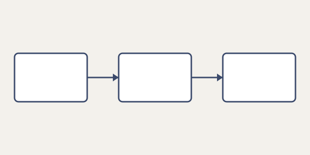

Why I stopped rushing the bread
By Priya Nair, published . Eleven minutes to read.
For years I baked a loaf on Saturday mornings by working backwards from lunch. The dough went in at eight, the oven came on at ten, and everyone was handed a warm slice at noon. It worked, in the sense that bread appeared. It rarely tasted like much.
The change came from a bad week. A flat of eggs went off in the heat, the oven door stuck, and I gave up on the schedule. The dough sat on the counter for most of a day, then spent the night in the fridge because I fell asleep on the sofa. On Sunday it baked into the best loaf I had made.
What the dough was doing
Time is an ingredient. While flour and water rest, enzymes break starch into sugar, and the gluten relaxes without any kneading. The crumb opens up and the crust browns deeper, because the sugars that formed overnight caramelise in the oven.
Good bread is mostly patience with a little flour in it.
A schedule that fits a working week
Here is the plan I follow now. It asks for about twenty minutes of attention in total, spread over two days1.
- Friday evening: mix 500 g flour, 350 g water, 10 g salt and a spoonful of starter. Cover it.
- Saturday morning: fold the dough twice, thirty minutes apart.
- Saturday night: shape the loaf and put it in the fridge.
- Sunday: bake from cold in a hot pot, lid on for twenty minutes, then off.
If the dough has not risen by Saturday night, do not panic2. A cool kitchen only means a longer wait.

What to expect
The first slow loaf will look unremarkable from the outside. Cut it and you will see an open, glossy crumb and smell something close to toasted nuts. Keep a note of the times you used so you can repeat the result, or change one thing at a time on purpose.